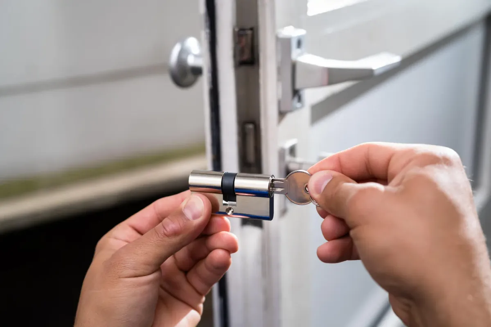

Schlüssel verloren
Solange ein Schlüssel im Umlauf ist, den Sie nicht selbst in der Hand halten, ist Ihre Tür nur so sicher wie der Finder ehrlich. Nach dem Zylindertausch passt der alte Schlüssel nicht mehr.
Ein Schloss tauscht niemand zum Vergnügen. Dahinter steckt fast immer ein verlorener Schlüssel, ein Umzug, ein Einbruch oder eine Tür, die sich nur noch mit Nachdruck abschließen lässt. Wir bauen den passenden Schließzylinder ein – gängiges Material haben wir im Fahrzeug dabei, deshalb ist die Sache meist in einem einzigen Termin erledigt.
Openmydoor24 sitzt in der Sandkaulstraße mitten in Aachen. Am Telefon und per WhatsApp erreichen Sie uns täglich von 08:00 bis 24:00 Uhr, freitags und samstags bis 02:00 Uhr nachts. Was der Wechsel kostet, sagen wir am Telefon – bevor wir losfahren, nicht danach.
Vier Situationen, in denen sich der Tausch fast immer lohnt.
Solange ein Schlüssel im Umlauf ist, den Sie nicht selbst in der Hand halten, ist Ihre Tür nur so sicher wie der Finder ehrlich. Nach dem Zylindertausch passt der alte Schlüssel nicht mehr.
Wer vor Ihnen gewohnt hat, hatte Schlüssel – wie viele, weiß im Zweifel niemand. Beim Einzug ist der neue Zylinder die günstigste Sicherheit, die Sie kaufen können.
Ein aufgebohrter oder abgebrochener Zylinder ist Schrott, auch wenn er sich noch drehen lässt. Wir ersetzen ihn und sehen uns an, an welcher Stelle die Tür nachgegeben hat.
Wenn der Schlüssel hakt, sich nur in einer bestimmten Stellung abziehen lässt oder feine Späne mitbringt, ist der Zylinder am Ende. Wer wartet, riskiert einen abgebrochenen Schlüssel im Schloss.
Bei den allermeisten Türen muss nicht das ganze Schloss heraus, sondern nur der Schließzylinder. Er steckt im Türblatt und wird von einer einzigen Schraube in der Stulpe gehalten. Wir messen ihn aus – die Länge zählt nach innen und nach außen getrennt –, ziehen den alten heraus und setzen den neuen bündig ein.
Das Maß ist kein Detail für Sammler: Steht ein Zylinder zu weit über, bietet er eine Angriffsfläche zum Abbrechen. Sitzt er zu tief, greift der Schutzbeschlag ins Leere. Das komplette Einsteckschloss wechseln wir nur dann, wenn Falle oder Riegel selbst nicht mehr sauber arbeiten.
Stehen Sie selbst vor der verschlossenen Tür, öffnen wir zuerst – möglichst beschädigungsfrei – und tauschen anschließend. Wie das abläuft, steht auf der Seite zur Türöffnung.

Ri Blecki
Google Bewertung
★★★★★
Auf einen Samstag Nachmittag den Schlüssel im Schloss abgebrochen. Ein Techniker war schnell und unkompliziert zur Stelle, konnte die Tür schnell öffnen. In meinem Fall musste der Techniker eine Stunde später nocheinmal vorbeikommen, da das Schloss…
Vollständige Rezension und alle weiteren Bewertungen: Openmydoor24 bei Google
Sagen Sie uns kurz, um welche Tür es geht – wir nennen Preis und Ankunftszeit sofort.

Zylinder ist nicht gleich Zylinder – der Preisunterschied steckt darin, was er aushält.
Ein Standardzylinder schließt zuverlässig, hält Werkzeug aber wenig entgegen; für Keller- und Innentüren reicht das. An Wohnungs- und Haustüren empfehlen wir Zylinder mit Bohr- und Ziehschutz: gehärtete Stifte und ein verstärkter Kern machen die beiden schnellsten Einbruchmethoden unattraktiv. Wo Schlüssel durch viele Hände gehen, lohnt sich zusätzlich ein Kopierschutz mit Sicherungskarte – Nachschlüssel gibt es dann nur gegen Vorlage der Karte.
Zylinder mit Not- und Gefahrenfunktion lassen sich von außen auch dann öffnen, wenn innen ein Schlüssel steckt. In Haushalten mit Kindern oder pflegebedürftigen Angehörigen ist das die sinnvollste Aufrüstung überhaupt. Welcher Schutz sich lohnt, hängt an Ihrer Tür und nicht am Katalog – wir sagen Ihnen auch, wenn der beste Zylinder nichts bringt, weil die Schwachstelle an Beschlag oder Rahmen liegt.
Sie beschreiben kurz die Tür: Wohnungs- oder Haustür, Schlüssel verloren oder Schloss defekt.
Wir nennen Ihnen Kosten und Ankunftszeit, bevor wir losfahren. Danach entscheiden Sie.
Zylinder ausmessen, tauschen, bei Bedarf vorher öffnen – gängiges Material haben wir dabei.
Wir probieren jeden neuen Schlüssel durch und rechnen direkt ab: bar, EC- oder Kreditkarte.
Für den Wechsel gibt es keinen Pauschalpreis, weil zwei Posten zusammenkommen: die Arbeitszeit und das Material. Die Arbeit rechnen wir nach Aufwand ab, der Zylinder kostet, was er kostet – ein Standardmodell ist eine andere Nummer als ein Zylinder mit Sicherungskarte. Beides erfahren Sie am Telefon, bevor wir zu Ihnen fahren.
Die feste Staffel von 75 € bis 125 € gilt für die Türöffnung, nicht für den Wechsel. Wenn wir erst öffnen und danach tauschen, stehen beide Posten getrennt auf der Rechnung – und Sie wissen vorher, was zusammenkommt.
In den meisten Fällen nicht. Es genügt, den Schließzylinder zu tauschen – danach passt der verlorene Schlüssel nicht mehr. Das komplette Einsteckschloss wechseln wir nur, wenn Falle oder Riegel selbst defekt sind.
Nein. Der Zylinder wird über die Stulpschraube ausgebaut, die Tür bleibt unversehrt. Aufgebohrt wird nur, wenn eine abgeschlossene Tür anders nicht zu öffnen ist – und dann kommt ohnehin ein neuer Zylinder hinein.
Ja. Wohnungstür, Haustür und Keller lassen sich gleichschließend einrichten, sodass ein einziger Schlüssel überall passt. Für größere Objekte planen wir stattdessen eine Schließanlage mit abgestuften Berechtigungen.
Ja, Schlüssel gehören zum neuen Zylinder dazu. Sagen Sie uns am Telefon, wie viele Sie brauchen. Nachbestellen können Sie später jederzeit – bei Zylindern mit Sicherungskarte allerdings nur gegen Vorlage dieser Karte.
Täglich von 08:00 bis 24:00 Uhr, freitags und samstags bis 02:00 Uhr nachts. Im Aachener Stadtgebiet sind wir in der Regel innerhalb von 30 Minuten bei Ihnen.